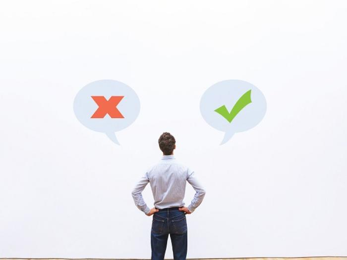
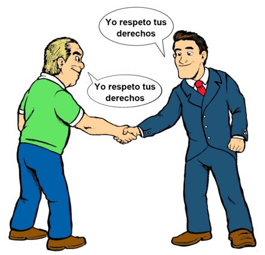
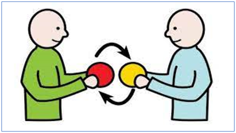
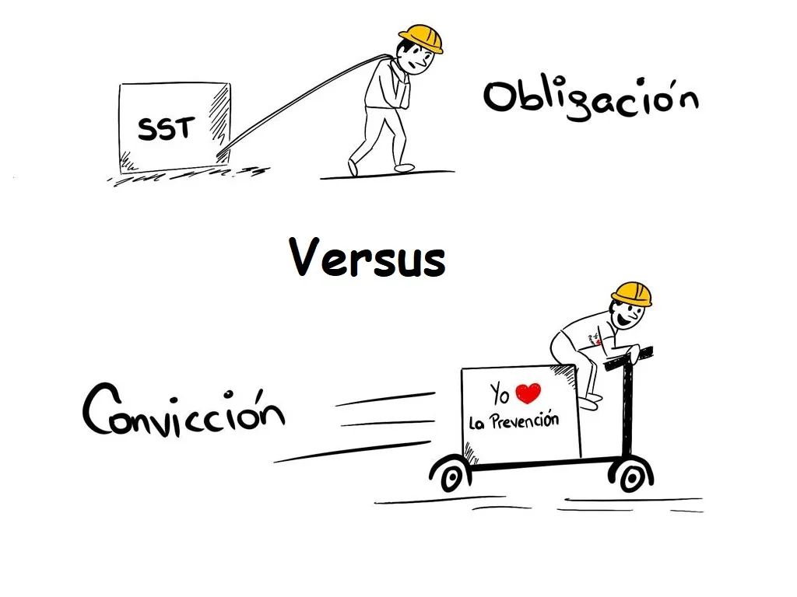

Valores Y Principios
La ética profesional se define como un conjunto de normas y valores morales que los profesionales de un determinado sector deben respetar durante el ejercicio de su profesión.
El principio de la Integridad
"El que camina en integridad anda confiado; más el que pervierte sus caminos será quebrantado" Integridad es la calidad de una persona...
Integridad es la calidad de una persona que es honrada, que está completa. La persona que la alcanza posee la virtud de ser predecible, intachable; que practica la rectitud, la probidad y la pureza. Se comporta de la misma manera, tanto en su vida privada como en la pública. Una persona íntegra, no se deja influenciar por la presión social, desarrolla disciplina y responsabilidad como parte de su fortaleza interior, por lo que se gana la credibilidad, confianza, respeto y consistencia de los demás.
{kind=link}
Honradez
Honradez
{kind=link}
Honestidad
Honestidad
{kind=link}
Humildad
Humildad
{kind=link}
Sensatez
Sensatez
PENSAMIENTO PARA REFLEXIONAR
Tomar decisiones basándonos en consideraciones éticas, no acomodadas a nuestra conveniencia, una persona íntegra actúa con sensatez, deja de lado el orgullo y busca siempre el beneficio colectivo. Ser responsables de nuestra forma de actuar y pensar nos vuelve íntegros para llevar una vida con rectitud. . 7:1 “El señor detesta el engaño y se complace en la honradez” (11:1)
PREGUNTAS AL USUARIO PARA MEDITAR-¿Qué consecuencias has tenido que enfrentar cuando no has actuado con sensatez?
-¿Qué beneficios te trae el actuar con sensatez?
-¿Por qué es importante actuar con sensatez en todas las situaciones de la vida?
El principio de confiar en Dios
"Encomienda tu obra al Señor, y tendrás éxito" La confianza es esperanza firme que se tiene de alguien o algo. Confiar en Dios signific...
La confianza es esperanza firme que se tiene de alguien o algo. Confiar en Dios significa descansar en Él, creer en lo que no vemos, esperar que las oportunidades se presenten, que termine bien lo que ahora va muy mal. Confiar en Dios nos da la seguridad de que todo estará bien; es ver lo que nuestros ojos físicos no ven. Más allá de lo que nuestra mente quiere hacernos pensar.
{kind=link}
Confianza
Confianza
{kind=link}
Dirección
Dirección
{kind=link}
Sabiduría
Sabiduría
{kind=link}
Obediencia
Obediencia
PENSAMIENTO PARA REFLEXIONAR
Dios en su infinito amor nos guía y nos alienta como sus hijos a ser mejores personas a actuar según sus mandatos. Confiar en Dios es la evidencia del amor que le tenemos, permitir que nos guíe en la vida nos garantiza tener una vida recta de amor y respeto. Tener fe en el nos brinda el soporte frente a las adversidades de la vida. . 38.6 “El señor inexpugnable fortaleza, los justos acuden a él y encuentran segurida ” (18:0)
PREGUNTAS AL USUARIO PARA MEDITAR-¿Te desagradan los problemas? ¿Por qué?
-¿Cómo reaccionas ante las dificultades?
-¿Qué enseñanzas te han dejado las dificultades que has experimentado?
El principio del perdón
"Encomienda tu obra al Señor, y tendrás éxito" La confianza es esperanza firme que se tiene de alguien o algo. Confiar en Dios signific...
"Sean bondadosos entre ustedes, compasivos, perdonándose las faltas que unos contra otros puedan cometer" El término perdón significa ... Cuando aprendemos a perdonar, muchos problemas quedan inesperadamente resueltos. Llegamos a descubrir que el perdón es el punto de partida para resolverlos. Para sentirnos realmente libres es necesario saber que perdonar es un paso decisivo no solo para la libertad emocional sino para la espiritual; recordando que perdonar no es lo mismo que justificar, excusar y olvidar.
{kind=link}
Libertad
Libertad
{kind=link}
Compensación
Compensación
{kind=link}
Restauración
Restauración
{kind=link}
Sanidad
Sanidad
PENSAMIENTO PARA REFLEXIONAR
El perdón es un acto saludable, beneficioso y virtuoso que nos trae gozo y paz. Cuando perdonamos desde lo más profundo de nuestro corazón se limpian nuestras heridas, alejamos la amargura, dejamos vacío el lugar ocupado por el rencor y lo llenamos de sentimientos y pensamientos agradables . 14:16 “El maestro sabio convierte el júbilo en aprendizaje; el maestro necio prefiere necesidades” (15:2)
PREGUNTAS AL USUARIO PARA MEDITAR-¿Le haces caso a la voz de tu conciencia?
-¿Consideras que la falta de perdón puede afectar nuestra salud? ¿Por qué?
El principio de crítica
"A todos les gusta dar buen consejo. ¡Qué admirable es saber decir la palabra adecuada en el momento oportuno!"
Crítica significa la acción de discernir; se deriva de la palabra criterio, en su objeto de discernir la verdad, evidenciando la falacia, el error. También se puede decir que es la acción dirigida, expresada como opinión formal, fundada y razonada, necesariamente analítica, con su connotación de sentencia cuando se establece una verdad, ante un tema u objeto usualmente concreto. Todos estamos en capacidad de emitir una crítica con la intención de edificar la vida de quienes la reciben. Antes de realizar una crítica debemos preguntarnos si beneficiará a quien la reciba. Debemos analizar la crítica, pasándola por los filtros de la verdad, la bondad y la utilidad.
{kind=link}
Juicios
Juicios
{kind=link}
Superación
Superación
{kind=link}
Beneficios
Beneficios
{kind=link}
Validez
Validez
PENSAMIENTO PARA REFLEXIONAR
Almacenar pensamientos positivos hacia la crítica, fortalecerá la forma en que pensamos acerca de las personas que la expresen, esto aumentará nuestro potencial y nos permitirá reconocer los beneficios de este valor. 14:16 “El maestro sabio convierte el júbilo en aprendizaje; el maestro necio prefiere necesidades” (15:2)
PREGUNTAS AL USUARIO PARA MEDITAR-¿Tiendes a rechazar la crítica? ¿Por qué?
-¿Puedes evaluar una crítica sin tomar en cuenta tu impresión de la persona?
-Puedes manejar discusiones acaloradas y perdonar después?
El principio de Justicia
"Jueces y oficiales pondrás en todas tus ciudades, los cuales juzgarán al pueblo con justo juicio"
Se entiende que justicia es todo aquello que está de acuerdo con el derecho, la razón y la equidad. Es la virtud que inclina a dar, a cada uno, lo que le corresponde o pertenece. La justicia como valor, es difícil de alcanzar porque en toda interacción humana existe una altísima probabilidad de conflicto. Todos somos diferentes y esas diferencias pueden generar problemas. Mientras más cercana es la relación, mayor el número de fricciones a que estamos expuestos.
El juicio debe ser justo, tomando en cuenta estos tres aspecto:
-No torcer o cambiar el derecho.
-No hacer acepción de personas.
-No aceptar sobornos.
{kind=link}
Equidad e imparcialidad
Equidad e imparcialidad
{kind=link}
Verdad
Verdad
{kind=link}
La ley del retorno
La ley del retorno
{kind=link}
Respeto
Respeto
PENSAMIENTO PARA REFLEXIONAR
El respeto al derecho ajeno y a la dignidad de las personas nos permite ser justos, pues siguiendo la regla de oro, cuando tratamos a las personas de la forma en que nos gustaría que nos tratan estamos respetándonos a nosotros primero , nuestra forma de actuar y comportarnos refleja mucho la persona que somos. 12:13 “Si un hombre se complace en locuras, algo anda mal. El sensato se mantiene en la sede de la justicia” (15:21)
PREGUNTAS AL USUARIO PARA MEDITAR-¿La gente comprende, con toda claridad, tu posición y tus puntos de vista?
-¿Por qué es importante respetar el derecho de los demás?
-¿Consideras que los demás te tratan con respeto? ¿Por qué?
El principio de motivar a las personas
"El trabajo tenaz da prosperidad; la especulación apresurada empobrece"
Motivación significa tener motivos para la acción, se basa en aquellos estímulos externos o
internos que impulsan a las personas a desarrollar una acción y mantener firme su conducta hasta
lograr que todos sus objetivos se cumplan mediante el interés, la voluntad y hacer un esfuerzo,
con el propósito de alcanzar metas reales establecidas con claridad.
Es necesario mantener la perseverancia que caracteriza a quienes deseamos lograr nuestros
objetivos.
Cuando tenemos motivos para actuar, hacemos planes y confiamos.
Para lograr un objetivo es necesario tomar en cuenta lo siguiente:
-No dejarse influenciar por quienes se han propuesto el mismo objetivo sin lograrlo
-Persistir hasta encontrar la solución al problema
-La motivación y la perseverancia son necesarias en la consecución de los propósitos.
Existen dos tipos de motivaciones:
-Motivación intrínseca: consiste en el deseo de ejecutar una conducta y de ser efectivo, por
propio interés.
-Motivación extrinseca: que se refiere al deseo de ejecutar una conducta a causa de las
recompensas prometidas o por temor al castigo.
{kind=link}
Propósitos
Equidad e imparcialidad
{kind=link}
Motivaciones
Visión

Visión
{kind=link}
Misión
Misión
PENSAMIENTO PARA REFLEXIONAR
Dios tiene un propósito en nuestras vidas, fuimos creados para llevar a cabo una misión , la cual podemos ir descubriendo conforme aumenta nuestra relación personal con Dios. Creer en nosotros mismos, sentir que somos instrumento para cambiar este mundo o hacer este mundo mejor , es una buena forma de vivir siendo útil. 13:21 “El que procura ser justo, amoroso y bondadoso, halla vida, justicia y honra” 21:21
PREGUNTAS AL USUARIO PARA MEDITAR-¿Cuál es el sueño que quieres alcanzar?
-¿Todas las actividades que realizas te conduce a la realización de tu visión? ¿Cuáles debieras eliminar para ser más efectivo?
-¿Qué propones para crear un ambiente de trabajo o estudio en que las personas se sientan inspiradas para alcanzar sus metas?
El principio de comprender a las personas
"Ponte de acuerdo con tu adversario pronto, mientras estás con él en el camino, no sea que te entregue al juez y éste al guardia y seas echado a la cárcel"
Muchas veces nos preguntamos, ¿Por qué hizo eso? ¿Cómo pudo hacer tal cosa? al ver el
comportamiento de ciertas personas. Al reflexionar sobre eso, nosotros nos damos cuenta que
muchas veces no entendemos a los demás, a su forma de pensar y de actuar.
En toda relación personal van a existir conflictos, algo que es un rasgo inevitable de las
relaciones sociales, el problema en sí deriva que se puede adoptar de una manera constructiva o
destructiva, por lo tanto, la cuestión no es tanto eliminar o prevenir el conflicto, sino saber
asumirlo y enfrentarse a él a través de acuerdos.
Entendimiento

Entendimiento
Valores
Valores
{kind=link}
Atención
Atención
Empatía

Empatía
PREGUNTAS AL USUARIO PARA MEDITAR
-¿Alguna vez has sentido el dolor o la alegría de alguien más?
-Cuál ha sido tu reacción ante el sufrimiento o alegría de los demás?
-¿En qué situaciones te ha resultado difícil ser empático? ¿Por qué?
El principio de la comunicación
"Si valoras comunicarte, enfocarás tu atención en comprender a la otra persona"
El funcionamiento de las sociedades humanas es posible gracias a la comunicación, esta consiste
en el intercambio de mensajes entre los individuos.
En general, la comunicación supone enviar algo de un sitio a otro, se transmite por medio del
lenguaje, a través de diferentes canales y modalidades de transmisión.
Con lo anterior se quiere decir que la comunicación supone la interacción o relación intencional
entre dos o más personas.
Cuando una persona habla, comunica no solo con palabras, sino con gestos y movimientos
corporales que pueden ser más significativos que las palabras que emite; incluso pueden hasta
cambiar el significado literal de las palabras expresadas.
{kind=link}
Consideración
Entendimiento
{kind=link}
Relación
Relación
{kind=link}
Influencia
Influencia
{kind=link}
Reciprocidad
Reciprocidad
PREGUNTAS AL USUARIO PARA MEDITAR
-¿Alguna vez has sentido el dolor o la alegría de alguien más?
-Cuál ha sido tu reacción ante el sufrimiento o alegría de los demás?
-¿En qué situaciones te ha resultado difícil ser empático? ¿Por qué?
El principio de empoderamiento
"Porque a cualquiera que tuviere, le será dado, y tendrá más; y al que no tuviere, aun lo que tiene le será quitado..."
Empoderamiento proviene de hacer poderoso o fuerte a un individuo o grupo social desfavorecido,
para el logro de un bien común.
En palabras más sencillas, significa facultarse, habilitarse, autorizarse; en ese sentido, el
empoderamiento es fundamental para las personas, pues contribuye a que descubran sus habilidades
y facultades, su propia autoridad y sus capacidades para hacer las cosas. Es decir, les lleva a
la valoración y el reconocimiento, permitiéndoles tomar el control de sus vidas.
El empoderamiento faculta a las personas para tomar decisiones prácticas y sencillas, dando como
resultado menos trámites, rapidez en las resoluciones, eficiencia de procesos y una mejora
palpable en su desarrollo integral.
{kind=link}
Convicción
Convicción
{kind=link}
Autoridad
Autoridad
{kind=link}
Delegación
Delegación
Cumplimiento
Cumplimiento
PREGUNTAS AL USUARIO PARA MEDITAR
-¿Acostumbras dejar asuntos pendientes? ¿Cuáles han sido las consecuencias?
-Por qué, asumir las consecuencias, es parte del principio del cumplimiento?
-¿Qué tiene que ver la exactitud con el principio de cumplimiento?
Integrantes del Equipo:
Victor Manuel Samines Bixcul | 2290-19-18249
Bryan Donald Thomas Chavajay Chocoy | 2290-19-1722
María Micaela Ajcabul Quievac | 2290-19-9505
Jefferson Jacob Velásquez Cululén | 2290-18-21484